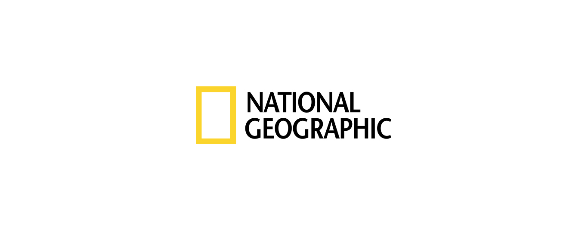
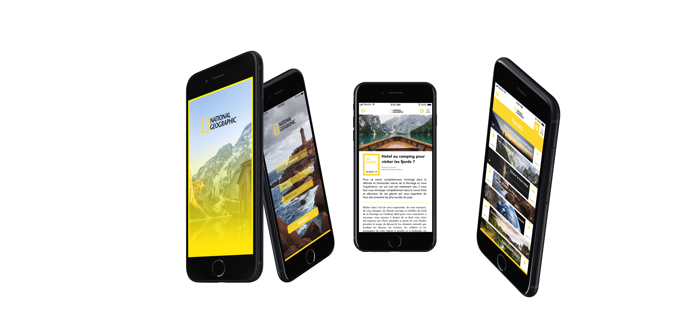

National Geographic
UX/UI Design, D.A
La marque mondialement connue National Géographic suit la pleine transformation digitale des grands médias. D'abord un magazine puis, à partir de 1997, une chaine de TV disponible dans 162 pays et maintenant une application mobile. Le média spécialiste de la nature et de la science, mais également de la culture et l'histoire souhaite exister comme un média digital pour parvenir à toucher une cible plus jeune et connectée.
C’est dans cet objectif que nous avons dévéloppé une application d'information spécialisée aliant simplicité, informations et design épuré appuyant son image de marque.
L'application propose un contenu qualitatif tant niveau editorial que visuel que l'on retrouve à travers tout les médias de la marque. Elle permet de s'inscire et de créer un profil afin d'apporter une sélection personnalisée du meilleur de son contenu, prenant en comptes vos choix de favoris, vos types de lectures récurentes, vos réactions et partage. Visuellement l'application reprend les codes et la chartes déjà forte de la marque National Géographic. Une nouvelle manière de découvrir ou re-découvrir National Geographic.


